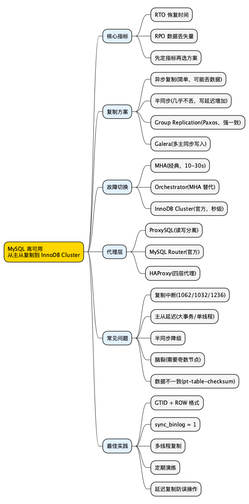

MySQL 高可用：从主从复制到 InnoDB Cluster，你需要知道的一切
Posted on 五 06 3月 2026 in Tech
| Abstract | MySQL 高可用：从主从复制到 InnoDB Cluster |
|---|---|
| Authors | Walter Fan |
| Category | Tech |
| Version | v1.0 |
| Updated | 2026-03-06 |
| License | CC-BY-NC-ND 4.0 |
📋 大纲
1. 为什么 MySQL 高可用是"保命底线" 2. 高可用的核心指标：RTO 和 RPO 3. 方案一览：从简单到复杂 4. 主从复制(Replication) 5. 半同步复制(Semi-Sync) 6. MHA(Master High Availability) 7. InnoDB Cluster / Group Replication 8. Galera Cluster 9. 代理层：ProxySQL / MySQL Router 10. 方案对比表 11. 常见错误与排查 12. 最佳实践清单 13. 思维导图一、为什么 MySQL 高可用是"保命底线"
数据库是大多数系统的"心脏"。Web 服务挂了可以重启，缓存丢了可以重建，但数据库挂了——
- 数据可能丢失
- 所有依赖它的服务全部瘫痪
- 恢复时间可能是分钟级甚至小时级
一个没有高可用方案的 MySQL，就像一辆没有备胎的车——平时看不出区别，爆胎的时候你就知道了。
更现实的一点：你以为自己在做"性能优化"，其实很多时候是在给未来的事故攒利息。等到线上真挂了，再去补 HA，就像半夜下雨了才想起来买伞。
讲个我见得最多、也最“打脸”的现场：主库挂了，但就是没切到从库。
告警先响的是应用端：接口 RT 飙升、错误率上来，日志里刷屏 can't connect to MySQL。你打开监控一看，主库已经不可达了；从库其实还活着、复制也没断，但业务照样全挂。
后来一盘点，原因往往很朴素：你以为你有“主从”，但你没有“切换”。比如：
- 应用连接串写死了主库 IP/DNS，没有 VIP/Proxy/服务发现，主库一挂，连接池只会一直重试
- 以为装了 MHA/Orchestrator 就万事大吉，结果进程没跑、权限不够、脚本没演练，故障时“自动切换”静悄悄
- 半同步/复制延迟一上来，大家怕丢数据不敢 promote，临时手工切换又没人敢拍板，RTO 直接被拖成半小时起步
这类事故最扎心的一句话是：高可用不是“多一台机器”，而是“检测 + 决策 + 执行”的闭环。
小白提示：高可用(High Availability, HA)不是"永远不挂"，而是"挂了能快速恢复"。衡量标准是 RTO(恢复时间目标)和 RPO(恢复点目标，即最多丢多少数据)。
二、核心指标：RTO 和 RPO
在选方案之前，先搞清楚两个关键指标：
| 指标 | 全称 | 含义 | 举例 |
|---|---|---|---|
| RTO | Recovery Time Objective | 从故障到恢复服务的最长时间 | RTO = 30s 意味着 30 秒内必须恢复 |
| RPO | Recovery Point Objective | 最多能接受丢失多少数据 | RPO = 0 意味着一条数据都不能丢 |
不同业务对 RTO/RPO 的要求不同：
- 电商交易：RPO = 0，RTO < 30s(一笔订单都不能丢)
- 内容管理：RPO < 1min，RTO < 5min(丢一分钟的草稿可以接受)
- 日志分析：RPO < 1h，RTO < 30min(丢一小时日志问题不大)
先定 RTO/RPO，再选方案——这是高可用设计的第一原则。
三、方案一览
MySQL 高可用方案从简单到复杂，大致分这几层：
Level 0: 单机 + 定时备份(不算高可用)
Level 1: 主从复制(异步)
Level 2: 半同步复制(Semi-Sync)
Level 3: MHA / Orchestrator(自动故障切换)
Level 4: InnoDB Cluster / Group Replication(官方方案)
Level 5: Galera Cluster(多主同步)
每一层解决的问题不同，复杂度和运维成本也不同。下面逐个拆解。
一句话提醒：别一上来就上最复杂的方案。你先把 RTO/RPO 定清楚，再决定要不要为"秒级切换"付出"长期运维成本"。
四、主从复制(Async Replication)
原理
┌──────────┐ binlog ┌──────────┐
│ Master │ ──────────▶ │ Slave │
│ (读写) │ 异步传输 │ (只读) │
└──────────┘ └──────────┘
- Master 把写操作记录到 binlog(二进制日志)
- Slave 的 IO Thread 拉取 binlog，写入 relay log
- Slave 的 SQL Thread 重放 relay log，应用到本地数据
配置要点
# Master my.cnf
[mysqld]
server-id = 1
log-bin = mysql-bin
binlog-format = ROW # 强烈推荐 ROW 格式
binlog-row-image = FULL
gtid-mode = ON # 开启 GTID
enforce-gtid-consistency = ON
sync-binlog = 1 # 每次事务都刷盘
# Slave my.cnf
[mysqld]
server-id = 2
relay-log = relay-bin
read-only = ON
gtid-mode = ON
enforce-gtid-consistency = ON
-- Slave 上执行
CHANGE MASTER TO
MASTER_HOST = '10.0.0.1',
MASTER_USER = 'repl_user',
MASTER_PASSWORD = 'repl_pass',
MASTER_AUTO_POSITION = 1; -- 使用 GTID 自动定位
START SLAVE;
SHOW SLAVE STATUS\G
优缺点
| 优点 | 缺点 |
|---|---|
| 配置简单，原生支持 | 异步 = 可能丢数据(RPO > 0) |
| 读写分离，提升读性能 | 主从延迟不可控 |
| Slave 可用于备份 | 故障切换需要手动或额外工具 |
适用场景
- 读多写少的业务
- 对数据一致性要求不高(RPO > 0 可接受)
- 作为其他方案的基础
踩坑提醒：
binlog-format = STATEMENT在某些场景下会导致主从数据不一致(比如NOW()、UUID()等非确定性函数)。生产环境请用 ROW 格式。
五、半同步复制(Semi-Synchronous Replication)
原理
异步复制的问题是：Master 提交事务后不等 Slave 确认，如果 Master 此时宕机，Slave 可能还没收到最新的 binlog。
半同步复制的改进：Master 提交事务后，至少等一个 Slave 确认收到 binlog，才返回成功。
┌──────────┐ 1. 写binlog ┌──────────┐
│ Master │ ────────────▶ │ Slave │
│ │ │ │
│ │ ◀──────────── │ │
│ │ 2. ACK确认 │ │
│ 3.返回 │ │ │
│ 客户端 │ │ │
└──────────┘ └──────────┘
配置
-- Master
INSTALL PLUGIN rpl_semi_sync_master SONAME 'semisync_master.so';
SET GLOBAL rpl_semi_sync_master_enabled = 1;
SET GLOBAL rpl_semi_sync_master_timeout = 1000; -- 1秒超时，超时降级为异步
-- Slave
INSTALL PLUGIN rpl_semi_sync_slave SONAME 'semisync_slave.so';
SET GLOBAL rpl_semi_sync_slave_enabled = 1;
STOP SLAVE; START SLAVE; -- 重启复制线程生效
关键参数
| 参数 | 说明 | 建议值 |
|---|---|---|
rpl_semi_sync_master_timeout |
等待 Slave ACK 的超时时间 | 1000-3000ms |
rpl_semi_sync_master_wait_for_slave_count |
需要几个 Slave 确认 | 1 |
rpl_semi_sync_master_wait_point |
等待点 | AFTER_SYNC(推荐) |
小白提示：
AFTER_SYNC(也叫"无损半同步")是 MySQL 5.7+ 的默认模式，它在 binlog 刷盘后、引擎提交前等待 Slave ACK。这样即使 Master 宕机，Slave 上的数据也是一致的。老版本的AFTER_COMMIT模式在极端情况下可能出现"幻读"。
优缺点
| 优点 | 缺点 |
|---|---|
| RPO ≈ 0(几乎不丢数据) | 写入延迟增加(多一次网络 RTT) |
| 配置相对简单 | 超时后降级为异步，RPO 保证失效 |
| 兼容异步复制架构 | 仍需额外工具做故障切换 |
六、MHA(Master High Availability)
是什么
MHA 是一个开源的 MySQL 高可用管理工具(by Yoshinori Matsunobu @ Facebook)，专门解决自动故障切换问题。
┌─────────────────────────────────┐
│ MHA Manager │
│ (监控 Master，触发故障切换) │
└──────────┬──────────────────────┘
│ 监控
┌──────┴──────┐
▼ ▼
┌────────┐ ┌────────┐ ┌────────┐
│ Master │ │ Slave1 │ │ Slave2 │
│ (挂了) │ │(提升为 │ │ │
│ │ │ Master)│ │ │
└────────┘ └────────┘ └────────┘
工作流程
- MHA Manager 持续监控 Master 的健康状态
- Master 宕机后，MHA 自动：
- 从所有 Slave 中选出数据最新的
- 补齐差异的 relay log(保证数据不丢)
- 将该 Slave 提升为新 Master
- 其他 Slave 指向新 Master
- 整个过程通常在 10-30 秒内完成
配置示例
# /etc/mha/app1.cnf
[server default]
manager_workdir=/var/log/mha/app1
manager_log=/var/log/mha/app1/manager.log
ssh_user=mysql
repl_user=repl_user
repl_password=repl_pass
[server1]
hostname=10.0.0.1
candidate_master=1
[server2]
hostname=10.0.0.2
candidate_master=1
[server3]
hostname=10.0.0.3
no_master=1 # 这个节点永远不提升为 Master
优缺点
| 优点 | 缺点 |
|---|---|
| 自动故障切换，RTO 10-30s | 项目已不太活跃(最后更新 2018) |
| 尽量补齐数据，RPO ≈ 0 | 只管故障切换，不管日常监控 |
| 成熟稳定，大量生产验证 | 需要 SSH 互信，安全性考量 |
| 支持 VIP 漂移 | 不支持多主 |
替代方案：GitHub 开源的 Orchestrator 是 MHA 的现代替代品，支持 Web UI、拓扑可视化、更灵活的故障切换策略。
七、InnoDB Cluster / Group Replication
是什么
这是 MySQL 官方推出的高可用方案，由三个组件组成：
┌─────────────────────────────────────┐
│ MySQL Shell │
│ (管理工具，创建/管理集群) │
└──────────────┬──────────────────────┘
│
┌──────────────┴──────────────────────┐
│ MySQL Router │
│ (代理层，自动路由读写请求) │
└──────────────┬──────────────────────┘
│
┌──────────┼──────────┐
▼ ▼ ▼
┌────────┐ ┌────────┐ ┌────────┐
│ Node1 │ │ Node2 │ │ Node3 │
│Primary │ │Second. │ │Second. │
│ (R/W) │ │ (R/O) │ │ (R/O) │
└────────┘ └────────┘ └────────┘
◀── Group Replication ──▶
Group Replication (GR) 是底层的复制协议，基于 Paxos 变体实现分布式一致性：
- 每个事务在提交前需要获得多数节点的认证(certification)
- 冲突检测在行级别进行
- 支持单主模式(推荐)和多主模式
配置(使用 MySQL Shell)
// 创建集群
mysqlsh> dba.createCluster('myCluster')
// 添加节点
mysqlsh> var cluster = dba.getCluster()
mysqlsh> cluster.addInstance('root@10.0.0.2:3306')
mysqlsh> cluster.addInstance('root@10.0.0.3:3306')
// 查看状态
mysqlsh> cluster.status()
关键配置参数
[mysqld]
# Group Replication 基础配置
plugin_load_add = 'group_replication.so'
group_replication_group_name = "aaaaaaaa-bbbb-cccc-dddd-eeeeeeeeeeee"
group_replication_start_on_boot = OFF
group_replication_local_address = "10.0.0.1:33061"
group_replication_group_seeds = "10.0.0.1:33061,10.0.0.2:33061,10.0.0.3:33061"
# 性能调优
group_replication_flow_control_mode = QUOTA
group_replication_flow_control_applier_threshold = 25000
group_replication_transaction_size_limit = 150000000 # 150MB
# 网络
group_replication_communication_max_message_size = 10485760
group_replication_member_expel_timeout = 5
MySQL Router 配置
# /etc/mysqlrouter/mysqlrouter.conf
[routing:primary]
bind_address = 0.0.0.0
bind_port = 6446
destinations = metadata-cache://myCluster/?role=PRIMARY
routing_strategy = first-available
[routing:secondary]
bind_address = 0.0.0.0
bind_port = 6447
destinations = metadata-cache://myCluster/?role=SECONDARY
routing_strategy = round-robin-with-fallback
应用连接时：
- 写请求 → 连接 6446 端口(路由到 Primary)
- 读请求 → 连接 6447 端口(负载均衡到 Secondary)
优缺点
| 优点 | 缺点 |
|---|---|
| 官方方案，持续维护 | 对网络延迟敏感(节点间 RTT < 10ms) |
| 自动故障检测和切换 | 大事务性能差(需要多数节点认证) |
| RPO = 0(多数确认) | 最少 3 节点，资源成本高 |
| 内置冲突检测 | 不支持外键(多主模式下) |
| MySQL Shell 管理方便 | 学习曲线较陡 |
八、Galera Cluster
是什么
Galera 是一个基于 wsrep(Write Set Replication)协议的同步多主复制方案。Percona XtraDB Cluster (PXC) 和 MariaDB Galera Cluster 都基于它。
┌────────┐ ┌────────┐ ┌────────┐
│ Node1 │◀───▶│ Node2 │◀───▶│ Node3 │
│ (R/W) │ │ (R/W) │ │ (R/W) │
└────────┘ └────────┘ └────────┘
▲ ▲ ▲
└──── 同步复制(wsrep)────────┘
每个节点都可以读写，事务在提交时同步到所有节点。
核心特性
- 真正的多主：任何节点都可以写
- 同步复制：事务提交时所有节点都有数据
- 自动成员管理：节点加入/离开自动处理
- 行级冲突检测：两个节点同时修改同一行会冲突
配置示例(PXC)
[mysqld]
wsrep_provider = /usr/lib/galera3/libgalera_smm.so
wsrep_cluster_name = my_pxc_cluster
wsrep_cluster_address = gcomm://10.0.0.1,10.0.0.2,10.0.0.3
wsrep_node_name = node1
wsrep_node_address = 10.0.0.1
wsrep_sst_method = xtrabackup-v2
wsrep_sst_auth = sst_user:sst_pass
# 性能
innodb_autoinc_lock_mode = 2 # Galera 要求
wsrep_slave_threads = 4 # 并行应用线程
优缺点
| 优点 | 缺点 |
|---|---|
| 多主写入，无单点 | 写性能受最慢节点限制 |
| 强一致性，RPO = 0 | 不支持大事务(锁冲突) |
| 自动节点管理 | 网络分区处理复杂 |
| 成熟稳定 | DDL 操作会阻塞整个集群 |
踩坑提醒：Galera 的
innodb_autoinc_lock_mode必须设为 2，否则会导致死锁。另外，避免在 Galera 上跑大批量INSERT ... SELECT或LOAD DATA，这类大事务会严重影响集群性能。
九、代理层：ProxySQL
不管用哪种复制方案，应用层都需要一个代理来做读写分离和故障切换。ProxySQL 是最流行的选择。
核心功能
┌─────────┐
│ App │
└────┬────┘
│
┌────▼────┐
│ProxySQL │ ← 读写分离、连接池、查询缓存、故障检测
└────┬────┘
│
┌────┴─────────────┐
│ │
▼ ▼
┌────────┐ ┌────────┐
│ Master │ │ Slave │
│ (写) │ │ (读) │
└────────┘ └────────┘
配置示例
-- 添加后端服务器
INSERT INTO mysql_servers (hostgroup_id, hostname, port, weight)
VALUES
(10, '10.0.0.1', 3306, 1000), -- 写组
(20, '10.0.0.2', 3306, 1000), -- 读组
(20, '10.0.0.3', 3306, 1000); -- 读组
-- 读写分离规则
INSERT INTO mysql_query_rules (rule_id, active, match_pattern, destination_hostgroup)
VALUES
(1, 1, '^SELECT .* FOR UPDATE$', 10), -- SELECT FOR UPDATE → 写组
(2, 1, '^SELECT', 20); -- 普通 SELECT → 读组
-- 加载配置
LOAD MYSQL SERVERS TO RUNTIME;
LOAD MYSQL QUERY RULES TO RUNTIME;
SAVE MYSQL SERVERS TO DISK;
SAVE MYSQL QUERY RULES TO DISK;
ProxySQL 健康检查
-- 配置后端监控
UPDATE global_variables SET variable_value='monitor_user'
WHERE variable_name='mysql-monitor_username';
UPDATE global_variables SET variable_value='monitor_pass'
WHERE variable_name='mysql-monitor_password';
SET mysql-monitor_read_only_interval = 1500; -- 1.5秒检查一次
SET mysql-monitor_read_only_timeout = 500;
LOAD MYSQL VARIABLES TO RUNTIME;
十、方案对比
| 方案 | RPO | RTO | 写性能 | 复杂度 | 节点数 | 适用场景 |
|---|---|---|---|---|---|---|
| 异步复制 | > 0 | 手动/分钟级 | ★★★★★ | ★☆☆☆☆ | 2+ | 读多写少，容忍少量丢数据 |
| 半同步复制 | ≈ 0 | 手动/分钟级 | ★★★★☆ | ★★☆☆☆ | 2+ | 需要数据安全，写量不大 |
| MHA | ≈ 0 | 10-30s | ★★★★☆ | ★★★☆☆ | 3+ | 成熟方案，中小规模 |
| InnoDB Cluster | = 0 | 秒级 | ★★★☆☆ | ★★★★☆ | 3+ | 官方方案，新项目首选 |
| Galera | = 0 | 秒级 | ★★★☆☆ | ★★★★☆ | 3+ | 多主写入，强一致性 |
怎么选？
你的 RPO 要求是什么？
├── RPO > 0 可接受 → 异步复制 + ProxySQL
├── RPO ≈ 0 →
│ ├── 需要自动切换？
│ │ ├── 是 → InnoDB Cluster(新项目)或 MHA(老项目)
│ │ └── 否 → 半同步复制
│ └── 需要多主写入？
│ └── 是 → Galera Cluster
└── RPO = 0 且 RTO < 5s → InnoDB Cluster 或 Galera
十一、常见错误与排查
1. 主从复制中断
症状：SHOW SLAVE STATUS 显示 Slave_SQL_Running: No
-- 查看错误
SHOW SLAVE STATUS\G
-- 关注这几个字段：
-- Last_SQL_Error: 具体错误信息
-- Last_SQL_Errno: 错误码
-- Seconds_Behind_Master: 延迟秒数
常见原因和解决：
| 错误码 | 原因 | 解决方案 |
|---|---|---|
| 1062 | 主键冲突(Slave 上已有该数据) | SET GLOBAL sql_slave_skip_counter = 1; START SLAVE; 或用 GTID 跳过 |
| 1032 | 找不到要更新/删除的行 | 检查数据一致性，可能需要重建 Slave |
| 1236 | binlog 位置无效 | Master 的 binlog 已被清理，需要重建 Slave |
⚠️ 不要随便跳过错误！
sql_slave_skip_counter是应急手段，跳过后主从数据可能不一致。正确做法是找到根因并修复。
2. 主从延迟过大
排查步骤：
-- 1. 检查延迟
SHOW SLAVE STATUS\G -- 看 Seconds_Behind_Master
-- 2. 检查是否有大事务
-- Master 上
SHOW PROCESSLIST;
SELECT * FROM information_schema.innodb_trx
WHERE trx_started < NOW() - INTERVAL 60 SECOND;
-- 3. 检查 Slave 的 IO/SQL 线程
SHOW SLAVE STATUS\G
-- Slave_IO_Running: Yes (IO线程正常)
-- Slave_SQL_Running: Yes (SQL线程正常)
-- Read_Master_Log_Pos vs Exec_Master_Log_Pos (差距大=SQL线程慢)
常见原因：
- 大事务：一个
ALTER TABLE或大批量UPDATE会阻塞复制 - Slave 硬件差：Slave 的 IO/CPU 跟不上 Master
- 单线程复制：MySQL 5.6 之前 SQL 线程是单线程的
解决方案：
# 开启多线程复制(MySQL 5.7+)
slave_parallel_type = LOGICAL_CLOCK
slave_parallel_workers = 8 # 根据 CPU 核数调整
slave_preserve_commit_order = ON # 保证提交顺序
3. 半同步降级为异步
症状：Rpl_semi_sync_master_status = OFF
-- 检查半同步状态
SHOW STATUS LIKE 'Rpl_semi_sync%';
-- Rpl_semi_sync_master_status: OFF ← 已降级
-- Rpl_semi_sync_master_no_tx: 123 ← 异步提交的事务数
原因：Slave 响应超时(网络抖动、Slave 负载高)
解决：
- 检查网络延迟：ping 和 mtr 排查
- 适当增大 rpl_semi_sync_master_timeout
- 确保至少有一个 Slave 在同机房
4. Group Replication 节点被驱逐
症状：节点状态变为 UNREACHABLE 或 ERROR
-- 检查 GR 状态
SELECT * FROM performance_schema.replication_group_members;
-- 查看错误日志
-- [ERROR] Plugin group_replication reported:
-- 'Member was expelled from the group due to network issues'
常见原因： - 网络分区或延迟过高 - 节点负载过高，无法及时响应心跳 - 大事务导致认证(certification)超时
解决：
# 增大容忍时间
group_replication_member_expel_timeout = 5 # 默认 0，建议 5s
group_replication_unreachable_majority_timeout = 30
# 限制事务大小
group_replication_transaction_size_limit = 150000000
5. 脑裂(Split Brain)
症状：两个节点都认为自己是 Master，同时接受写入
这是高可用最危险的故障。预防措施：
# InnoDB Cluster / GR：天然防脑裂(Paxos 多数派)
# 至少 3 个节点，挂 1 个不影响
# MHA：配置 fencing 脚本
# 在切换前先 STONITH(Shoot The Other Node In The Head)
master_ip_failover_script=/usr/local/bin/master_ip_failover
shutdown_script=/usr/local/bin/power_manager
6. 数据不一致
检测工具：
# 使用 pt-table-checksum 检测主从数据一致性
pt-table-checksum \
--host=10.0.0.1 \
--user=checksum_user \
--password=checksum_pass \
--databases=mydb \
--tables=orders
# 使用 pt-table-sync 修复不一致
pt-table-sync \
--execute \
--sync-to-master \
h=10.0.0.2,D=mydb,t=orders
十二、最佳实践清单
基础设施
- [ ] 至少 3 个节点(1 主 2 从，或 3 节点 GR)
- [ ] 跨机架/可用区部署(避免单点故障)
- [ ] 专用复制网络(复制流量和业务流量分离)
- [ ] SSD 存储(binlog 和 redo log 放 SSD)
复制配置
- [ ] 使用 GTID(比传统 binlog position 更可靠)
- [ ] binlog 格式用 ROW(避免非确定性函数导致不一致)
- [ ]
sync_binlog = 1(每次事务刷盘，防止 binlog 丢失) - [ ]
innodb_flush_log_at_trx_commit = 1(redo log 每次事务刷盘) - [ ] 开启多线程复制(
slave_parallel_workers >= 4)
监控告警
- [ ] 监控复制延迟(
Seconds_Behind_Master或heartbeat表) - [ ] 监控复制状态(IO/SQL 线程是否运行)
- [ ] 监控半同步状态(是否降级为异步)
- [ ] 定期数据一致性校验(
pt-table-checksum，每周一次)
故障切换
- [ ] 自动切换工具(MHA / Orchestrator / InnoDB Cluster)
- [ ] VIP 或 DNS 切换(应用不需要改连接串)
- [ ] 切换后自动通知(钉钉/飞书/PagerDuty)
- [ ] 定期演练(每季度至少一次故障切换演练)
备份
- [ ] 从 Slave 备份(不影响 Master 性能)
- [ ] 物理备份(
xtrabackup，比mysqldump快 10 倍) - [ ] 备份验证(定期恢复到测试环境验证)
- [ ] binlog 保留足够长(至少 7 天，
expire_logs_days = 7)
安全
- [ ] 复制用户最小权限(只给
REPLICATION SLAVE) - [ ] 开启复制加密(
MASTER_SSL = 1) - [ ] ProxySQL 用户隔离(不同应用用不同用户)
十三、一个生产环境的参考架构
┌─────────────┐
│ HAProxy │ ← VIP: 10.0.0.100
│ (主备) │
└──────┬──────┘
│
┌──────┴──────┐
│ ProxySQL │ ← 读写分离 + 连接池
│ (主备) │
└──────┬──────┘
│
┌────────────┼────────────┐
│ │ │
┌─────┴─────┐ ┌───┴───┐ ┌─────┴─────┐
│ MySQL │ │MySQL │ │ MySQL │
│ Primary │ │Second.│ │ Second. │
│ (AZ-a) │ │(AZ-b) │ │ (AZ-c) │
└────────────┘ └───────┘ └────────────┘
│
┌─────┴─────┐
│ Delayed │ ← 延迟复制(1 小时)，防误操作
│ Slave │
└────────────┘
关键设计点：
- ProxySQL 主备：避免代理层单点
- 3 节点 GR：跨 3 个可用区，自动故障切换
- 延迟复制 Slave：设置 1 小时延迟，用于误操作恢复
-- 配置延迟复制
CHANGE MASTER TO MASTER_DELAY = 3600; -- 延迟 1 小时
思维导图
@startmindmap
<style>
mindmapDiagram {
node { BackgroundColor #FAFAFA }
:depth(0) { BackgroundColor #FFD700 }
:depth(1) { BackgroundColor #E3F2FD }
:depth(2) { BackgroundColor #F5F5F5 }
}
</style>
* MySQL 高可用\n从主从复制到 InnoDB Cluster
** 核心指标
*** RTO 恢复时间
*** RPO 数据丢失量
*** 先定指标再选方案
** 复制方案
*** 异步复制(简单，可能丢数据)
*** 半同步(几乎不丢，写延迟增加)
*** Group Replication(Paxos，强一致)
*** Galera(多主同步写入)
** 故障切换
*** MHA(经典，10-30s)
*** Orchestrator(MHA 替代)
*** InnoDB Cluster(官方，秒级)
** 代理层
*** ProxySQL(读写分离)
*** MySQL Router(官方)
*** HAProxy(四层代理)
** 常见问题
*** 复制中断(1062/1032/1236)
*** 主从延迟(大事务/单线程)
*** 半同步降级
*** 脑裂(需要奇数节点)
*** 数据不一致(pt-table-checksum)
** 最佳实践
*** GTID + ROW 格式
*** sync_binlog = 1
*** 多线程复制
*** 定期演练
*** 延迟复制防误操作
@endmindmap

扩展阅读
- MySQL 官方文档 - Group Replication
- High Performance MySQL, 4th Edition — O'Reilly
- ProxySQL 官方文档
- Percona XtraDB Cluster 文档
- GitHub - Orchestrator — MHA 的现代替代
- MySQL High Availability - Percona Blog
本作品采用知识共享署名-非商业性使用-禁止演绎 4.0 国际许可协议进行许可。